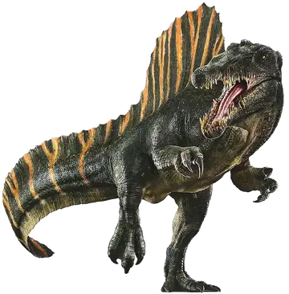

Espinossauro (nome científico: Spinosaurus; cujo nome significa Lagarto Espinho) foi um gênero de dinossauro espinossaurídeo que viveu durante o Cenomaniano do período Cretáceo, entre 100 e 94 milhões de anos atrás, principalmente na região que é hoje o Norte da África[2]. Este gênero foi conhecido a partir de vestígios egípcios descobertos em 1912 e descritos em 1915 pelo paleontólogo Ernst Stromer. Esses primeiros vestígios foram destruídos na Segunda Guerra Mundial, mas material adicional foi encontrado no início do século XXI. O S. aegyptiacus é a espécie-tipo do gênero, embora haja o S.mirabilis,uma espécie descrita formalmente em fevereiro de 2026 do Níger e S. maroccanus como uma espécie em potencial. Sobre seus sinônimos, o gênero Sigilmassasaurus já foi sinonimizado por alguns autores como um S. aegyptiacus, embora outros pesquisadores proponham que seja um gênero distinto, outro possível sinônimo é o Oxalaia da Formação Alcântara no Brasil, como um sinônimo não totalmente crescido de S. aegyptiacus.